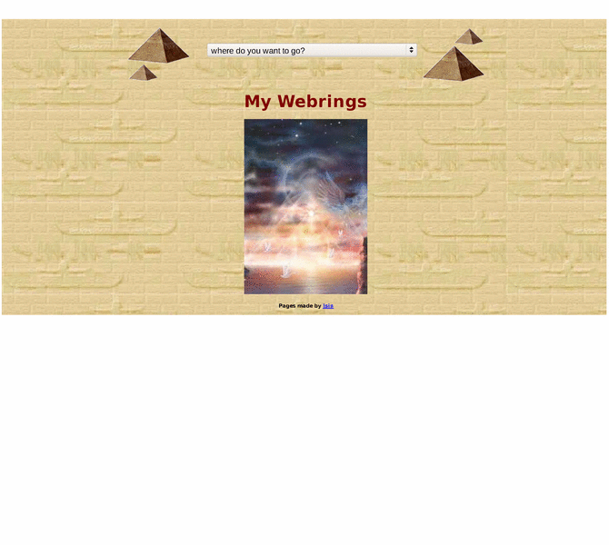

Previewing: Mysteries in Stone Previewing: Mysteries in Stone 
Use the left/right red arrow controls to navigate through this ring - Click the preview image to visit the member site.

This award winning site explores the mystery and splendour of life in Ancient Egypt. It is aimed at beginners and experts alike. Offers free email - The Scribe - which is accessible from anywhere in the world
Mysteries in Stone owned by:
 goddess_isisuk goddess_isisuk
A member of the original webring since 02/07/2009.
|
|